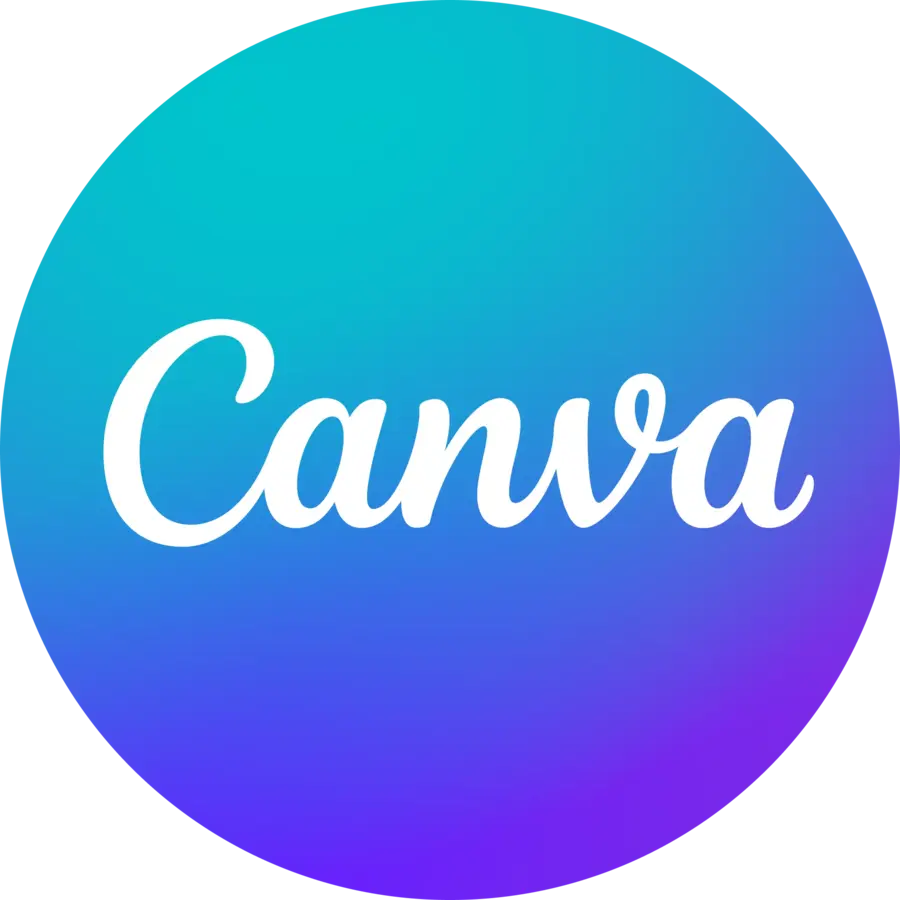

Qui suis-je
Je m'appelle Marcel Chanard, j’ai 19 ans. Je suis née aux États-Unis, dans l’État de Washington, et je possède la double nationalité franco-américaine.
J’ai vécu 16 ans aux États-Unis avant de venir m’installer en France. Cette double culture m’a permis de développer une ouverture internationale ainsi qu’une grande capacité d’adaptation.
Parcours scolaire
À mon arrivée en France, j’ai intégré un lycée en voie générale, où j’ai effectué ma Première et ma Terminale avec mention Bien.
Je suis actuellement en première année de Bachelor en Gestion des Entreprises et des Administrations (GEA). L’année prochaine, je poursuivrai le parcours Gestion Comptable, Fiscale et Financière (GC2F).
Après l’obtention de mon BUT, je souhaite poursuivre mes études dans une grande école afin de me spécialiser en finance d’entreprise (Corporate Finance).
Mon objectif professionnel est de travailler dans le domaine de la finance, notamment dans des secteurs tels que la banque, l’investissement ou le private equity.
Compétences



Expérience
Stage — Agence Laforêt
- Création de tableaux de suivi pour l’agence et les collaborateurs.
- Automatisation des tableaux pour simplifier le suivi de l’activité.
- Outils utilisés par la directrice pour le pilotage interne.